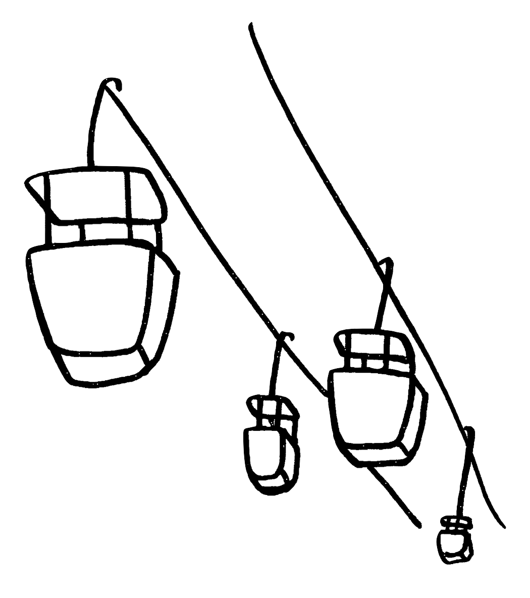

Skyway: 1 Death
On April 17, 1994, a 30-year-old man fell approximately twenty feet from one of the gondolas into a tree in front of Alice in Wonderland. Paramedics rescued him and took him to an area hospital for treatment for minor injuries. The man filed a $25,000 lawsuit against Disney, claiming he had simply fallen out of the ride. However, just before the trial date in September 1996, the victim admitted he had indeed purposely jumped out of the ride; the suit was subsequently dropped.
